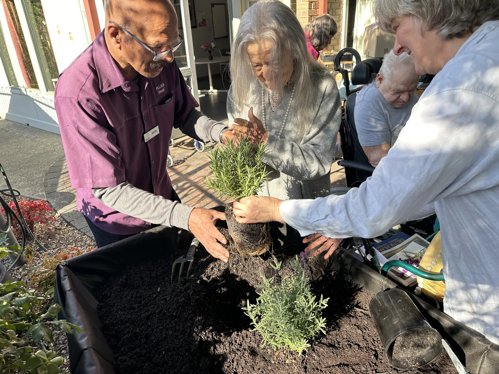
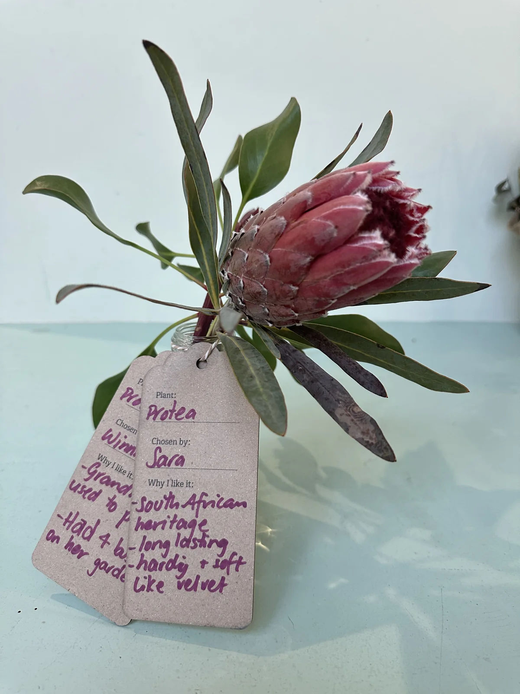
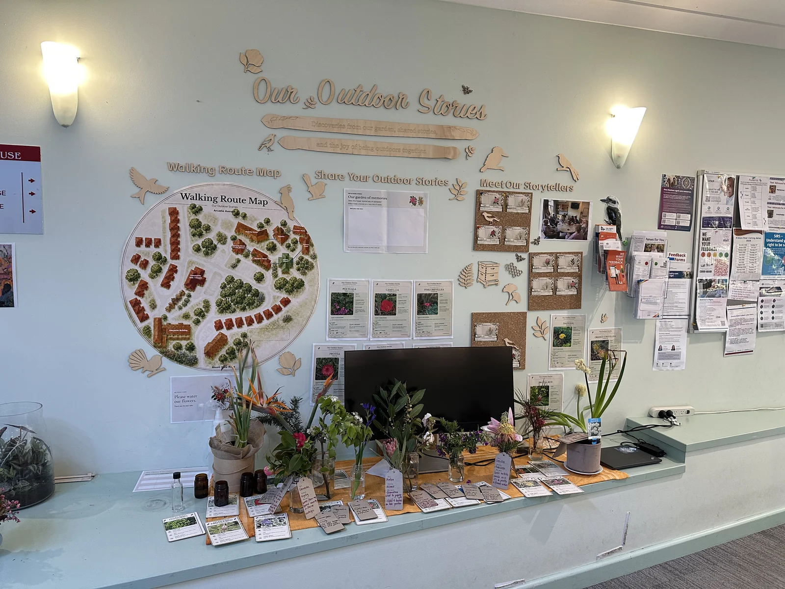

Xingting Wu武星廷
PhD candidate in Design
Swinburne University of Technology · Melbourne
I’m a design researcher and illustrator working at the intersection of human–computer interaction, participatory design, and everyday life.
My PhD explores outdoor engagement in residential aged care. I work with older adults and care staff through crafting, gardening, and nature discovery to understand how design can support meaningful participation.
My wider research explores human–AI interaction, AI in education, and technology adoption. I collaborate with researchers across design, HCI, education, and related fields, connecting interests in creative practice and learning across generations.
Making, growing,
sharing.
My doctoral research follows the connections between creative activities, outdoor places, and everyday care. These projects bring that work into view.

Making together
Shared crafting, brought together in an outdoor Nativity display.

Our Garden
Exploring plants, care, and the rhythms of everyday participation.

Our Outdoor Stories
From a chosen flower to a personal memory and a shared display.
Recent writing.
Game design for older adults: A bibliometric review of trends and future directions
International Journal of Human–Computer Interaction 42 (9), 6655-6687
From “Warm Expert” to “Warm Steward”: Digital Backfeeding as Everyday Intergenerational GenAI Learning in Chinese Families
International Journal of Human–Computer Interaction, 1-28
Human-AI co-creation or conflict? Mapping art students’ diverse perspectives on creative identity with genAI: A Q methodology study
Education and Information Technologies
A place to explore.
A story to share.
In Our Outdoor Stories, I’m exploring how a garden map can connect playful plant discovery with a shared indoor display. A walk becomes an invitation to notice, choose, and tell a story.
Explore the map & plant activities
- 01
Choose a place.
A familiar path, a flower bed, or somewhere to pause.
- 02
Follow a plant.
Look for a colour, notice a detail, or share what you recognise.
- 03
Bring back a story.
A photograph, a plant, or a few words become part of the shared display.
The walking route map sits alongside plant photographs, handwritten contributions, and fresh flowers, bringing outdoor discoveries into a shared indoor space.

Currently.
Developing Our Outdoor Stories: connecting garden walks, plant choices, and a shared display.
Bringing together crafting, gardening, and outdoor discovery in my doctoral research.
Connections,
near and far.
A little window into the places this work reaches. Thank you for stopping by.
Start a conversation
{kind=link}
Approximate visitor locations. Map by MapMyVisitors · About visitor data